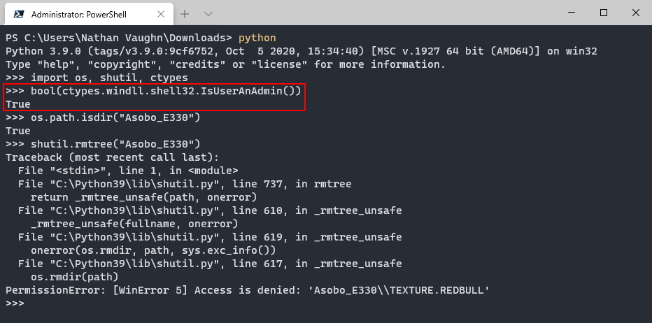
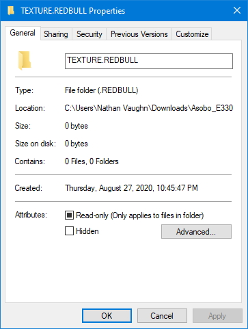
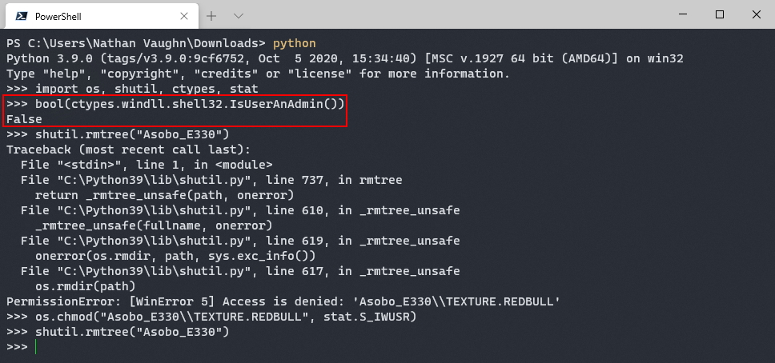

Fixing a Weird Python Permission Issue
Table of Contents
Introduction
A while back, I was working on
my mod manager
for the new Microsoft Flight Simulator.
While testing my mod manager, I ran into a scenario where Python
couldn’t delete a mod’s folder with the error:
Permission Error: [WinError 5] Access is denied.
I thought this was strange as the files were owned by my account, and Python
should have had permission to delete them (and I hadn’t had this issue with
any other mods). I even tried relaunching the Python process
as an administrator, and Python still couldn’t delete it.

Even weirder, the folder was completely empty (as Python was able to delete all of the contents), yet it couldn’t delete the 0-byte folder itself.

And to make it still stranger, I could delete this folder fine in File Explorer under my regular user account, just not programmatically.
Solution
Unfortunately, I don’t know enough about the NTFS filesystem and Windows to understand
why this is happening, but I did figure out how to fix it. You need to apply
the stat.S_IWUSR
(write by owner) mode to the folder with
os.chmod.

Here is a very simple implementation for recursively fixing permissions:
import shutil, os, stat
def fix_perm(folder):
for root, dirs, files in os.walk(folder):
for d in dirs:
# recursively fix directories
os.chmod(os.path.join(root, d), stat.S_IWUSR)
for f in files:
# recursively fix files
os.chmod(os.path.join(root, f), stat.S_IWUSR)
def rm_tree_perm(folder, first=True):
try:
# attempt to delete normally
shutil.rmtree(folder)
except PermissionError:
if first:
# if first time, fix permissions and try again
fix_perm(folder)
rm_tree_perm(folder, first=False)
else:
# raise error with second failure
raise PermissionErrorYou could also just always try to fix the permissions before attempting to delete the folder. I’m not sure of the performance implications.
If you’d like to see this for yourself, I’ve included a minimum working example
of this in a Zip file, below. Just extract the file and inside
there will be two 0-byte folders. The folder TEXTURE.REDBULL will have this
mysterious issue and the folder TEXTURE.YELLOW will not.